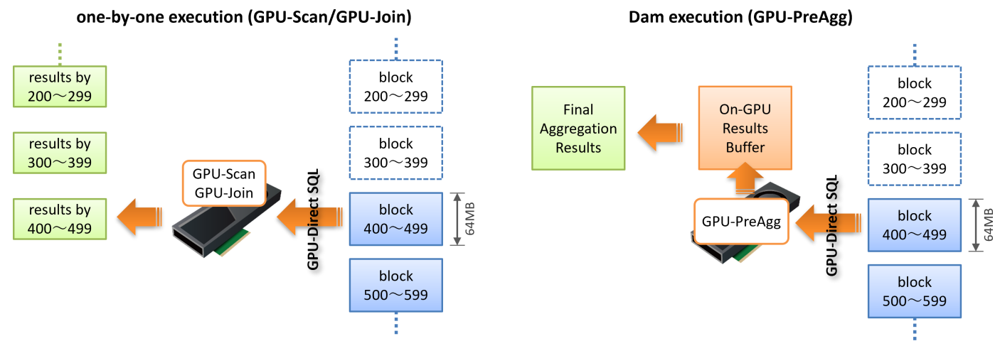
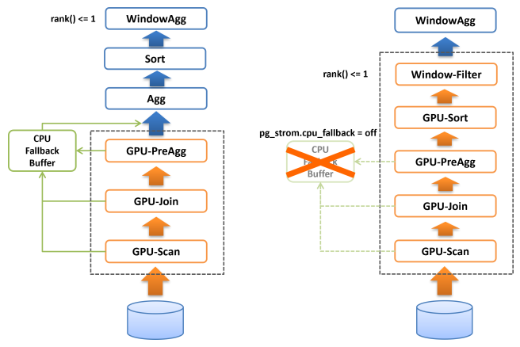

GPU-Sort
This chapter introduces the GPU-Sort and related features.
GPU Task Execution

To explain the conditions for using GPU-Sort, we first need to know how PG-Strom processes SQL workloads.
When GPU-Scan and GPU-Join read a table to be processed, they divide the data into chunks of about 64MB and read it from storage to GPU, evaluate WHERE clauses and JOIN conditions on GPU, and write the processing results back to CPU.
At this time, the GPU memory used for Scan/Join processing is released and reused to process the next 64MB chunk. Normally, data reading from storage, Scan/Join processing on GPU, and writing back to CPU are executed concurrently, but GPU memory is still released and reused one after another, so PG-Strom does not use much GPU memory.
On the other hand, GPU-PreAgg is different. Due to the nature of the workload, the results of the aggregation process are stored on the GPU (Dam execution), and then written back to the CPU in one go. Therefore, when GPU-PreAgg is completed, almost all of the data is in the GPU memory.
Due to the nature of the sorting process, all of the data to be sorted must be loaded onto the GPU in order to execute GPU-Sort. In other words, in the case of GPU-Sort, which does not involve aggregation operations and has only GPU-Scan and GPU-Join as its lower nodes, the execution results must be stored in the GPU memory as in GPU-PreAgg. This is the same execution method used in Inner Pinned Buffer in GpuJoin, and when the results of GPU-Scan/Join are used in the next step, they are kept in the GPU memory instead of being returned to the CPU.
Enables GPU-Sort
Due to the nature of sorting workloads, all the target data must be stored in GPU memory.
Therefore, it is a basic premise that the data to be sorted must fix in the GPU memory capacity, but there is one more thing to consider.
Various GPU processes in PG-Strom have a mechanism called CPU-Fallback, which re-executes the processing of operators and SQL functions on the CPU if they cannot be completed on the GPU. Typically, this is the case when variable-length data does not fit into the PostgreSQL block size (8kB) and is stored in an external TOAST table. CPU-Fallback is a function to ensure continuity of processing even for extremely exceptional data, but rows that are subject to CPU-Fallback are stored in the CPU and do not exist in GPU memory, which causes an obstacle when sorting.
Therefore, the GPU-Sort function works only when the CPU-Fallback function is disabled, i.e., when pg_strom.cpu_fallback=off is set.

If CPU-Fallback is disabled, the complete results of GPU-Scan/Join/PreAgg are guaranteed to be in GPU memory, so PG-Strom can perform parallel sorting based on the Bitonic-Sorting algorithm and return the sorted results to the CPU.
When used with a window function that limits the number of rows, such as the LIMIT clause or rank() < 4, it will reduce the number of data returned to the CPU based on these optimization hints. This should contribute to speedup by reducing the number of data to be processed by the CPU.
The following execution plan shows the result of narrowing down the number of rows using a window function (rank() < 4) without enabling GPU-Sort.
=# explain analyze
select * from (
select c_region, c_nation, c_city, lo_orderdate, sum(lo_revenue) lo_rev,
rank() over(partition by c_region, c_nation, c_city
order by sum(lo_revenue)) cnt
from lineorder, customer
where lo_custkey = c_custkey
and lo_shipmode in ('RAIL','SHIP')
group by c_region, c_nation, c_city, lo_orderdate
) subqry
where cnt < 4;
QUERY PLAN
--------------------------------------------------------------------------------------------------------------------------------------------------------------------
WindowAgg (cost=32013352.01..33893039.51 rows=75187500 width=84) (actual time=13158.987..13335.106 rows=750 loops=1)
Run Condition: (rank() OVER (?) < 4)
-> Sort (cost=32013352.01..32201320.76 rows=75187500 width=76) (actual time=13158.976..13238.136 rows=601500 loops=1)
Sort Key: customer.c_region, customer.c_nation, customer.c_city, (pgstrom.sum_numeric((pgstrom.psum(lineorder.lo_revenue))))
Sort Method: quicksort Memory: 76268kB
-> HashAggregate (cost=15987574.35..18836475.71 rows=75187500 width=76) (actual time=9990.801..10271.543 rows=601500 loops=1)
Group Key: customer.c_region, customer.c_nation, customer.c_city, lineorder.lo_orderdate
Planned Partitions: 8 Batches: 1 Memory Usage: 516113kB
-> Custom Scan (GpuPreAgg) on lineorder (cost=4967906.38..5907750.13 rows=75187500 width=76) (actual time=9175.476..9352.529 rows=1203000 loops=1)
GPU Projection: pgstrom.psum(lo_revenue), c_region, c_nation, c_city, lo_orderdate
GPU Scan Quals: (lo_shipmode = ANY ('{RAIL,SHIP}'::bpchar[])) [plan: 600046000 -> 171773200, exec: 1311339 -> 362780]
GPU Join Quals [1]: (lo_custkey = c_custkey) [plan: 171773200 -> 171773200, exec: 362780 -> 322560
GPU Outer Hash [1]: lo_custkey
GPU Inner Hash [1]: c_custkey
GPU Group Key: c_region, c_nation, c_city, lo_orderdate
Scan-Engine: GPU-Direct with 2 GPUs <0,1>; direct=11395910, ntuples=1311339
-> Seq Scan on customer (cost=0.00..81963.11 rows=3000011 width=46) (actual time=0.008..519.064 rows=3000000 loops=1)
Planning Time: 1.395 ms
Execution Time: 13494.808 ms
(19 rows)
After GPU-PreAgg, HashAggregate is run to aggregate the partial aggregation results, and Sort is run to sort the aggregated values. Finally, WindowAgg is run to narrow down the results to the top three sum(lo_revenue) for each c_region, c_nation, and c_city.
The processing time for GPU-PreAgg is 9.352 seconds, so we can see that roughly 4 seconds of the latter half of the process was spent on the CPU.
On the other hand, the following execution plan disables CPU-Fallback by setting pg_strom.cpu_fallback=off (i.e. enables GPU-Sort).
=# set pg_strom.cpu_fallback = off;
SET
=# explain analyze
select * from (
select c_region, c_nation, c_city, lo_orderdate, sum(lo_revenue) lo_rev,
rank() over(partition by c_region, c_nation, c_city
order by sum(lo_revenue)) cnt
from lineorder, customer
where lo_custkey = c_custkey
and lo_shipmode in ('RAIL','SHIP')
group by c_region, c_nation, c_city, lo_orderdate
) subqry
where cnt < 4;
QUERY PLAN
--------------------------------------------------------------------------------------------------------------------------------------------------------
WindowAgg (cost=5595978.47..5602228.47 rows=125000 width=84) (actual time=9596.930..9598.194 rows=750 loops=1)
Run Condition: (rank() OVER (?) < 4)
-> Result (cost=5595978.47..5599415.97 rows=125000 width=76) (actual time=9596.918..9597.292 rows=750 loops=1)
-> Custom Scan (GpuPreAgg) on lineorder (cost=5595978.47..5597540.97 rows=125000 width=76) (actual time=9596.912..9597.061 rows=750 loops=1)
GPU Projection: pgstrom.psum(lo_revenue), c_region, c_nation, c_city, lo_orderdate
GPU Scan Quals: (lo_shipmode = ANY ('{RAIL,SHIP}'::bpchar[])) [plan: 600046000 -> 171773200, exec: 1311339 -> 362780]
GPU Join Quals [1]: (lo_custkey = c_custkey) [plan: 171773200 -> 171773200, exec: 362780 -> 322560
GPU Outer Hash [1]: lo_custkey
GPU Inner Hash [1]: c_custkey
GPU Group Key: c_region, c_nation, c_city, lo_orderdate
Scan-Engine: GPU-Direct with 2 GPUs <0,1>; direct=11395910, ntuples=1311339
GPU-Sort keys: c_region, c_nation, c_city, pgstrom.fsum_numeric((pgstrom.psum(lo_revenue)))
Window-Rank Filter: rank() over(PARTITION BY c_region, c_nation, c_city ORDER BY pgstrom.fsum_numeric((pgstrom.psum(lo_revenue)))) < 4
-> Seq Scan on customer (cost=0.00..81963.11 rows=3000011 width=46) (actual time=0.006..475.006 rows=3000000 loops=1)
Planning Time: 0.381 ms
Execution Time: 9710.616 ms
(16 rows)
The HashAggregate and Sort that were in the original query plan have gone, and instead, the lines GPU-Sort keys and Window-Rank Filter have appeared as options for GpuPreAgg.
This indicates that GpuPreAgg creates the complete aggregation on the GPU, then sorts and outputs it.
In addition, in this query, filtering is performed using the window function rank(). By pushing down this condition to the lower node GpuPreAgg, rows that are known to be filtered out in advance are removed from the result set, reducing the amount of data transferred from the GPU to the CPU and the number of rows that the CPU needs to copy. These processes are processed in parallel on the GPU memory, so they are generally faster than CPU processing.
Row reductions by GPU-Sort
There are several conditions that must be met for GPU-Sort to be triggered. As explained in the previous section, the first prerequisite is that CPU-Fallback is disabled.
The optimizer will insert GPU-Sort in the following cases: - Upper nodes require sorted results, such as in an ORDER BY clause. - Window functions are used, and upper nodes require sorted results.
For these workloads, PG-Strom will generate GPU-PreAgg/Join/Scan execution plans with GPU-Sort.
In addition, in the following cases, by completing the sorting process on the GPU, it is possible to secondarily reduce the number of rows to be written back to CPU from the GPU.
- When a LIMIT clause is added to ORDER BY, and the maximum number of rows that should be output is known in advance.
- When the window function rank() or the like is used, the top number of rows that should be output from each partition is known in advance.
The following execution plan joins several tables, performs aggregation operations, sorts the results by d_year and revenue, and outputs the top 10.
=# set pg_strom.cpu_fallback = off;
SET
=# explain
select c_nation, s_nation, d_year, sum(lo_revenue) as revenue
from customer, lineorder, supplier, date1
where lo_custkey = c_custkey
and lo_suppkey = s_suppkey
and lo_orderdate = d_datekey
and c_region = 'ASIA' and s_region = 'ASIA'
and d_year >= 1992 and d_year <= 1997
group by c_nation, s_nation, d_year
order by d_year, revenue
limit 10;
QUERY PLAN
----------------------------------------------------------------------------------------------------------------------------------------------------------------
Gather (cost=19266896.24..19266897.46 rows=10 width=68) (actual time=44024.638..44056.484 rows=10 loops=1)
Workers Planned: 2
Workers Launched: 2
-> Result (cost=19265896.24..19265896.46 rows=10 width=68) (actual time=44016.179..44016.185 rows=3 loops=3)
-> Parallel Custom Scan (GpuPreAgg) on lineorder (cost=19265896.24..19265896.31 rows=10 width=68) (actual time=44016.177..44016.181 rows=3 loops=3)
GPU Projection: pgstrom.psum(lo_revenue), c_nation, s_nation, d_year
GPU Join Quals [1]: (s_suppkey = lo_suppkey) [plan: 2500011000 -> 494752100, exec: 0 -> 0
GPU Outer Hash [1]: lo_suppkey
GPU Inner Hash [1]: s_suppkey
GPU Join Quals [2]: (c_custkey = lo_custkey) [plan: 494752100 -> 97977410, exec: 0 -> 0
GPU Outer Hash [2]: lo_custkey
GPU Inner Hash [2]: c_custkey
GPU Join Quals [3]: (d_datekey = lo_orderdate) [plan: 97977410 -> 84024450, exec: 0 -> 0
GPU Outer Hash [3]: lo_orderdate
GPU Inner Hash [3]: d_datekey
GPU Group Key: c_nation, s_nation, d_year
Scan-Engine: GPU-Direct with 2 GPUs <0,1>; direct=114826068, ntuples=0
GPU-Sort keys: d_year, pgstrom.fsum_numeric((pgstrom.psum(lo_revenue)))
GPU-Sort Limit: 10
-> Parallel Custom Scan (GpuScan) on supplier (cost=100.00..78805.87 rows=824560 width=22) (actual time=16.090..104.527 rows=666540 loops=3)
GPU Projection: s_nation, s_suppkey
GPU Scan Quals: (s_region = 'ASIA'::bpchar) [plan: 9999718 -> 824560, exec: 10000000 -> 1999620]
Scan-Engine: GPU-Direct with 2 GPUs <0,1>; direct=168663, ntuples=10000000
-> Parallel Custom Scan (GpuScan) on customer (cost=100.00..79517.76 rows=2475728 width=22) (actual time=14.848..226.354 rows=2000770 loops=3)
GPU Projection: c_nation, c_custkey
GPU Scan Quals: (c_region = 'ASIA'::bpchar) [plan: 30003780 -> 2475728, exec: 30000000 -> 6002311]
Scan-Engine: GPU-Direct with 2 GPUs <0,1>; direct=519628, ntuples=30000000
-> Parallel Seq Scan on date1 (cost=0.00..69.55 rows=1289 width=8) (actual time=0.009..0.132 rows=731 loops=3)
Filter: ((d_year >= 1992) AND (d_year <= 1997))
Rows Removed by Filter: 121
Planning Time: 0.786 ms
Execution Time: 44093.114 ms
(32 rows)
Without GPU-Sort, GPU-PreAgg will generate 4375 partial aggregation results, integrates them with HashAggregate, sorts them with Sort, and outputs only the top 10 with Limit.
Depending on the scale of the problem, a strategy may be adopted in which partial sort results are generated for each PostgreSQL parallel worker and merge-sorted. In any case, sorting processing, which places a heavy load on the CPU, becomes a troublesome problem as the number of items increases.
However, if it is known in advance that only the top 10 sorted results will be output, there is no need to return 4365 pieces of data to the CPU in the first place.
This query execution plan does not include CPU Sort or HashAggregate.
Instead, as a post-processing step of GPU-PreAgg, the results are sorted based on the key values displayed in the GPU-Sort keys line, and only the 10 rows displayed in the GPU-Sort Limit line are returned. The execution plan is to immediately return the GPU processing results to the client without executing Sort or Limit on the CPU side.
In addition to the LIMIT clause, window functions can be used as hints to reduce the number of rows. Currently, the following conditional expressions can be used as hints:
rank() OVER(...) < CONSTrank() OVER(...) <= CONSTdense_rank() OVER(...) < CONSTdense_rank() OVER(...) <= CONSTrow_number() OVER(...) < CONSTrow_number() OVER(...) <= CONST
If you want to disable CPU-Fallback but not GPU-Sort, you can enable/disable only GPU-Sort by pg_strom.enable_gpusort = [on|off].